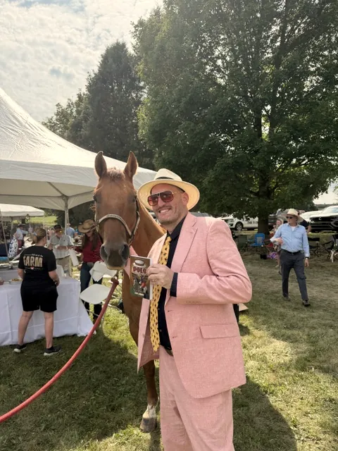

Polo matches near me: where to watch around Milwaukee and Chicago
Don Lubner’s polo was Wisconsin polo, so this guide starts at his club and works south. Somewhere else? Here’s how to find polo near you.
Club details checked September 2026. Schedules change every season, so confirm dates on each club’s own site before you go.
Milwaukee Polo Club, Hartland, Wisconsin
This is Don’s club. He first came to a match at its old home, Uihlein Field in Milwaukee, around 1978, and joined Dan Dance in the announcer’s booth after the club moved west to Hartland in the 1990s. The club gives 1952 as its founding year, and the USPA lists it as the Greater Milwaukee Polo Club.
Where: N75 W30343 County Road VV, Hartland, WI 53029, about 30 miles west of downtown Milwaukee.
When: summer, roughly mid-May to the end of September.
Schedule: greatermilwaukeepolo.com
Club polo like this is the best kind for a first match: relaxed, close to the action, and easy to ask questions at. Bring a chair, and join the divot stomp at halftime.

Polo near Chicago
Barrington Hills Polo Club: the Kalaway Cup
Barrington Hills Polo Club, northwest of the city, plays both on grass and in an arena. Its grass field is open to members and their guests by invitation, so for most spectators the way in is its big public day: the LeCompte/Kalaway Cup, held on the first Saturday after Labor Day at Oakwood Farms in Barrington Hills.
Expect a full afternoon: gates at 11, polo from noon, a parade of the hounds, Pony Club demonstrations, halftime entertainment, and hat and tailgate competitions, so dress for it. Individual tickets are sold at the gate for cash only, children 12 and under get in free, and tailgate spaces must be reserved ahead.
The club’s arena polo is played at Fox Creek Stables, 23755 Milton Road, Wauconda, IL, which moves indoors for the winter. Details and the calendar are at barringtonhillspolo.com.
Oak Brook Polo Club: check before you go
Oak Brook, 17 miles from the Loop and home to polo since 1922, is the name most Chicagoans know. Its own website now says the club is closing its doors under its current leadership, so check oakbrookpoloclub.com for news before planning a trip.
Las Brisas Farm and Polo Club, Elgin
Further west, Las Brisas in Elgin hosts tournaments on the USPA calendar, including youth events. Look it up in the USPA’s tournament listings, below, for dates.
Going for the first time? Read your first polo match, polo match etiquette and polo rules explained first, and keep the polo terms and definitions handy for when the announcer starts talking about chukkers and handicaps.